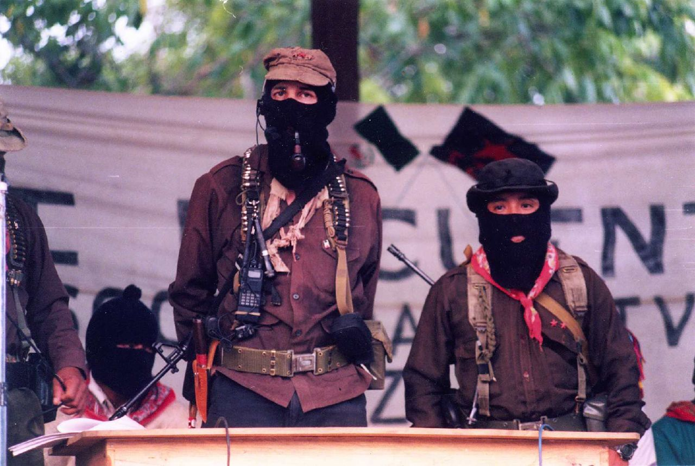

En 1990
Interventions américaines et internationales à Haïti depuis les années 1990.
L'opération Uphold Democracy est une intervention militaire des États-Unis, de la Pologne et de l'Argentine mais sous commandement américain. Elle visait à supprimer le régime militaire installé par le coup d'État de 1991 en Haïti, qui a renversé le président élu Jean-Bertrand Aristide. L'opération qui eut lieu entre le 19 septembre 1994 et le 31 mars 1995 a été autorisée par la résolution 940 du Conseil de sécurité des Nations unies.
En 1991
Guerre du Golfe du 17 janvier - 27 janvier
Les États-Unis ont mobilisé: 535 000 hommes, 80 navires, 6 porte-avions, 2 navires-hôpitaux, des sous-marins, 1 350 avions, 1 500 hélicoptères, 1 000 chars d'assaut, 2 000 blindés, 1 800 pièces d'artillerie ce qui créa 61,1 milliards de dollars de dépenses militaires, dont 43,1 millards furent remboursés par des pays alliés (Arabie saoudite : 16,8 ; Koweït : 11,1 ; Japon : 9,4 ; Allemagne : 6,6 ; Émirats : 4 ; Corée du Sud : 0,17 ; autres États : 0,02).
En 1992
Emeutes à Los Angeles
Les émeutes de 1992 à Los Angeles ont débuté le 29 avril 1992 à Los Angeles après qu'un jury, composé de dix Blancs, un Asiatique et un Latino, a acquitté quatre officiers de police blancs accusés d'avoir passé à tabac un automobiliste noir américain, Rodney King, après une course-poursuite pour excès de vitesse. Des centaines d'habitants de Los Angeles, principalement de jeunes hommes afro-américains et latinos ont pris part à des pillages, des incendies criminels et des meurtres.
Élection de Bill Clinton.
Il sera réélu en 1996
En 1993
Le Siège de Waco
Le siège de Waco est un blocus qui s'est déroulé du 28 février au 19 avril 1993 à la résidence du groupe religieux les « Branch Davidians » dans la ville de Elk, près de Waco au Texas, aux États-Unis. 82 personnes dont 21 enfants et le leader du groupe, David Koresh, périrent, principalement dans l'incendie qui mit un terme aux 51 jours de siège par les forces de police.L'affaire est considérée comme l'un des événements les plus catastrophiques de l'histoire américaine contemporaine, Bill Clinton déclarant avoir été furieux « d'avoir donné son assentiment à ce raid, auquel il ne croyait guère ». C'est aussi l'action la plus meurtrière du gouvernement américain contre ses citoyens depuis la guerre de Sécession. Les controverses soulevées par la gestion du conflit persistent à ce jour
En 1994
Séisme à Los Angeles
Le séisme de 1994 à Northridge est un tremblement de terre qui s'est produit près de Los Angeles le 17 janvier 1994 à 4 h 31. De magnitude de moment 6.7, il a tué 72 personnes et fait quelque 9 000 blessés.
Signature de l'ALENA

L'Accord de libre-échange nord-américain, connu sous l'acronyme ALENA, est un traité, entré en vigueur le 1ᵉʳ janvier 1994, qui institue une zone de libre-échange entre les États-Unis, le Canada et le Mexique, trois pays d'Amérique du Nord, couvrant environ 480 millions d'habitants
Affaire Whitewater
Le scandale du Whitewater, est une controverse de politique intérieure américaine qui a débuté à partir d'investissements dans l'immobilier de Bill et Hillary Clinton et deux de leurs associés, Jim et Susan Mac Dougal dans la Whitewater Development Corporation, une entreprise commerciale qui a fait faillite dans les années 1970 et 1980. Un article du New York Times publié durant la campagne présidentielle de 1992 a révélé que Bill Clinton et son épouse, Hillary, avaient investi et perdu de l'argent dans le projet de développement Whitewater
Révolte néozapatiste au Mexique
La révolte au Chiapas menée par l'Armée zapatiste de libération nationale débuta dans les années 1980, mais son événement le plus visible, le soulèvement armé, date du 1er janvier 1994 dans le sud-est du Mexique, avec l'occupation durant quelques heures du palais municipal de San Cristobal de Las Casas connue sous le nom de Prise de San Cristóbal de Las Casas (es) et de ceux de plusieurs autres chef-lieu (Ocosingo, Las Margaritas, Altamirano et Comitan). Une partie des communautés du Chiapas ("néozapatistes") se sont regroupés pour défendre des droits qu'ils pensaient bafoués, et se sont entrainés à l'affrontement armé
En 1995
Le 13em Amendement au Mississipi.
Le sénat du Mississippi ratifie enfin le 13e amendement de la constitution des États-Unis, mettant un terme a l'esclavage !
Attentat d'Oklahoma City.
Au milieu de cette atmosphère d'optimisme et de changement, le 19 avril 1995, Timothy McVeigh gara un camion de location rempli d'explosifs au bâtiment fédéral Alfred P. Murrah. Cet attentat changea la ville et la nation américaine. Une explosion massive tua 168 personnes, dont 19 enfants, et blessa des milliers des personnes. Elle endommagea ou détruisit beaucoup de bâtiments environnants. Jusqu'aux attaques du 11 septembre 2001, c'était la plus grande attaque terroriste sur le sol américain et reste la plus grande attaque de terroristes nationaux dans l'histoire américaine. Depuis la ville a reconstruit les bâtiments et il est maintenant difficile de voir des traces de l'attentat. Un mémorial dédié aux victimes de cet attentat est situé sur le lieu de la tragédie
Guerre du Cenepa
La guerre du Cenepa ou guerre de l'Alto Cenepa est la dernière guerre entre le Pérou et l'Équateur à propos du conflit frontalier entre les deux pays. Elle eut lieu en janvier-février 1995.
En 1998
Monicagate

Monica Samille Lewinsky, née le 23 juillet 1973 à San Francisco (Californie), est une femme d'affaires américaine.Elle défraya la chronique en 1998-1999 lorsqu'il fut rendu public qu'elle avait eu des relations sexuelles avec le président Bill Clinton, lors d'un stage effectué à la Maison-Blanche. Le mensonge sous serment de Clinton à propos de cette relation conduisit à un impeachment à son encontre, procédure qui fut bloquée par le Sénat des États-Unis. Cette affaire, connue sous le nom d'« affaire Lewinsky » ou de « Monicagate » (« gate » en référence au scandale du Watergate), connut une médiatisation exceptionnelle, tant aux États-Unis qu'à l'étranger.
En 1999
Décès de Bill Bowerman
Il est le cofondateur de la firme Nike. La légende raconte qu'il avait créé la chaussure mythique avec… un moule à gaufres.
En 2000
Incendie ravageant le Nouveau-Mexique
Pendant l'été, de violents incendies ravagent 13 États de l'Ouest, du Nouveau-Mexique à la frontière canadienne.

 • Les 15 films les plus lucratifs de la décennie sont: Titanic, Star Wars, épisode I : La Menace fantôme, Le Monde perdu : Jurassic Park, Independence Day, Le Roi lion, Forrest Gump, Sixième Sens, Armageddon, Maman, j'ai raté l'avion, Pulp Fiction, Ghost, Twister, Il faut sauver le soldat Ryan, Pretty Woman, Matrix, Mission : Impossible, Danse avec les loups, La Momie, et Bodyguard.
• Le film Titanic devient un phénomène culturel mondial, ainsi que le film le plus lucratif de tous les temps avec des recettes aux environs de 1,8 milliard $ dans le monde entier. Il tiendra ce record pour environ une décennie jusqu'en 2010 quand le même réalisateur James Cameron fit un autre film qui reprit le titre, celui-ci étant Avatar.
• Les 15 films les plus lucratifs de la décennie sont: Titanic, Star Wars, épisode I : La Menace fantôme, Le Monde perdu : Jurassic Park, Independence Day, Le Roi lion, Forrest Gump, Sixième Sens, Armageddon, Maman, j'ai raté l'avion, Pulp Fiction, Ghost, Twister, Il faut sauver le soldat Ryan, Pretty Woman, Matrix, Mission : Impossible, Danse avec les loups, La Momie, et Bodyguard.
• Le film Titanic devient un phénomène culturel mondial, ainsi que le film le plus lucratif de tous les temps avec des recettes aux environs de 1,8 milliard $ dans le monde entier. Il tiendra ce record pour environ une décennie jusqu'en 2010 quand le même réalisateur James Cameron fit un autre film qui reprit le titre, celui-ci étant Avatar.